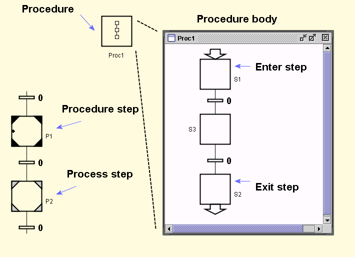

Procedures make it possible to create reusable building blocks. A procedure has its body stored in a subworkspace and begin and end with enter and exit steps in the same way as for macro steps.
Procedures are reentrant and may even be recursive. Procedures may also have parameters. All internal variables within the procedure can be used as parameters.
A procedure can be called in the following ways:
When a procedure is called from a procedure step, the transitions after the procedure step do not become enabled until the execution has reached the exit step of the procedure. This corresponds to an ordinary procedure call.
When a procedure is called from a process step the transitions after the procedure step are enabled immediately. Conceptually, the procedure call is spawned and executed in a separate execution thread.
When a procedure is started manually or with the spawn() method it is started in the same way as for a Process Step.
